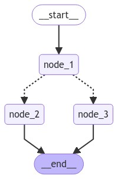

üß© Tema 1: Nodos en LangGraph
üß© ¬øQu√© es un Nodo?
En LangGraph, los nodos representan las operaciones fundamentales que se realizan en un flujo de trabajo. Cada nodo se encarga de procesar datos o estados, y a partir de esto, devolver un nuevo estado o resultado.
Piensa en los nodos como piezas individuales de una máquina que trabajan juntas para completar una tarea compleja.
Los nodos están conectados mediante aristas (edges) que permiten el flujo de información entre ellos, formando un grafo que ejecuta operaciones de manera secuencial o condicional.
üõ†Ô∏è ¬øC√≥mo Funciona un Nodo?
- Un nodo es una función que toma un estado de entrada y devuelve un nuevo estado.
- Los nodos pueden representar tareas simples (como sumar números) o procesos más complejos (como ejecutar un modelo de IA).
- Cada nodo tiene una conexión hacia otros nodos, permitiendo que el flujo continúe según la lógica definida.
üöÄ Ejemplo: Construyendo un Grafo con Nodos
Para entender mejor cómo funcionan los nodos, vamos a construir un grafo simple utilizando LangGraph.
El objetivo será simular un grafo que cambia de estado y elige diferentes caminos en función de decisiones aleatorias.
1. Instalación de LangGraph
Primero, asegurémonos de tener instalada la librería LangGraph.
2. Definiendo el Estado del Grafo
El estado del grafo es una estructura que guarda información sobre el progreso y los datos en cada paso.
Aquí definimos una clase State que representa el estado del grafo con una variable graph_state de tipo texto.
3. Creando los Nodos
Ahora crearemos tres nodos simples:
1. Nodo 1: Modifica el estado inicial agregando "Me gusta.
2. Nodo 2: Añade "programar!" al estado.
3. Nodo 3: Añade "salir en bici!" al estado.
Cada nodo es una función que recibe el estado actual (state) y devuelve un nuevo estado modificado.
def node_1(state):
print("---Node 1---")
return {"graph_state": state['graph_state'] + " Me gusta"}
def node_2(state):
print("---Node 2---")
return {"graph_state": state['graph_state'] + " programar!"}
def node_3(state):
print("---Node 3---")
return {"graph_state": state['graph_state'] + " salir en bici!"}
4. Agregando Lógica de Decisión
Aquí agregamos una función decide_hooby que decide aleatoriamente si el flujo continúa hacia el Nodo 2 (programar) o el Nodo 3 (salir en bici).
Esto simula una bifurcación en el camino que dependerá del resultado de una probabilidad del 50%.
import random
from typing import Literal
def decide_hooby(state) -> Literal["node_2", "node_3"]:
if random.random() < 0.5:
return "node_2"
return "node_3"
5. Construcción del Grafo
En este paso, construimos el grafo utilizando StateGraph.
from IPython.display import Image, display
from langgraph.graph import StateGraph, START, END
builder = StateGraph(State)
builder.add_node("node_1", node_1)
builder.add_node("node_2", node_2)
builder.add_node("node_3", node_3)
builder.add_edge(START, "node_1")
builder.add_conditional_edges("node_1", decide_hooby)
builder.add_edge("node_2", END)
builder.add_edge("node_3", END)
graph = builder.compile()
-
StateGraph(State):- Creamos una instancia de
StateGraphy le pasamos el estado que definimos antes (State). - ¿Por qué lo hacemos?: LangGraph necesita saber qué tipo de estado manejará el grafo.
- Creamos una instancia de
-
builder.add_node("node_1", node_1):- Añadimos el Nodo 1 al grafo.
- El primer parámetro
"node_1"es el identificador del nodo, y el segundo (node_1) es la función que ejecutará.
-
builder.add_node("node_2", node_2):- Agregamos el Nodo 2. Funciona de la misma forma que el Nodo 1.
-
builder.add_node("node_3", node_3):- Agregamos el Nodo 3 al grafo.
-
builder.add_edge:- Agregamos los edges, esto lo veremos más en profundidad en el siguiente tema.
-
Finalmente, compilamos el grafo:graph = builder.compile(): Ensambla el grafo con todos los nodos y conexiones.
6. Visualización del Grafo
Para visualizar el grafo, usamos la función draw_mermaid_png() que genera un diagrama del grafo.
Esto nos permite ver gráficamente cómo están conectados los nodos.

7. Invocamos el Grafo
Para invocar el grafo, simplemente usamos el siguiente código:
---Node 1---
---Node 3---
{'graph_state': 'Hola, me llamo Raul. Me gusta salir en bici!'}
Como vemos, nuestro grafo ha creado dos cadenas diferentes basado en la aleatoriedad. Con esto podemos tener una idea básica de como funcionan los nodos y cual es su principal función.
üîé Recursos:
 Definición: Nodos
Definición: Nodos
üß© ¬øQu√© Hemos Aprendido?
- Nodos: Son funciones que procesan datos y modifican el estado de un grafo.
- Decisiones Condicionales: Podemos agregar lógica de bifurcación para que el flujo tome diferentes caminos.
- StateGraph: Es la base sobre la que construimos el grafo, añadiendo nodos y conexiones.
- Visualización: LangGraph permite visualizar gráficamente el flujo de trabajo.
üåê Siguientes Pasos
En el siguiente tema aprenderemos sobre Edges (Conexiones), que permiten conectar nodos y controlar el flujo de información entre ellos.